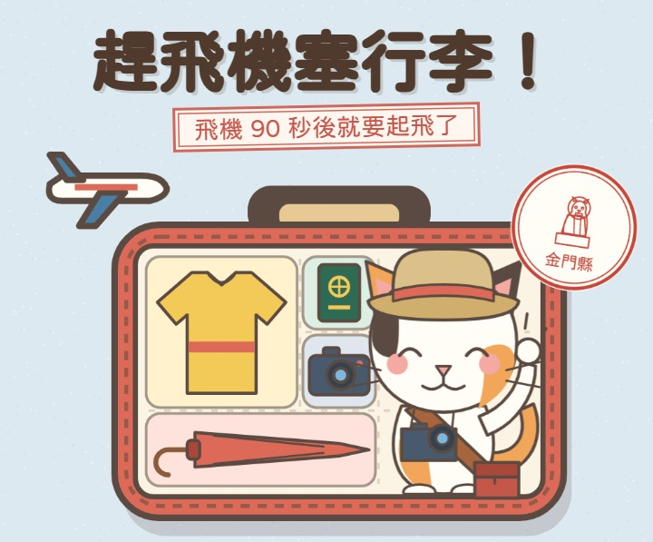
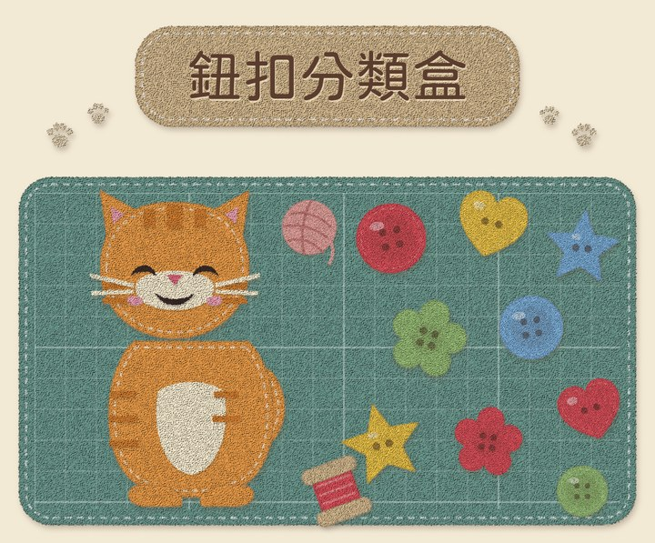
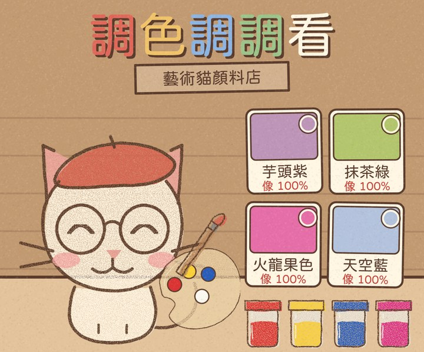

Daisy的遊戲室
點了就能玩，不用登入，手機電腦都能玩！
來玩吧！

旅遊貓NEW
趕飛機塞行李！
快要登機了！把東西轉一轉、塞進行李箱。小心貓跳進來佔位子！
開始玩
手作貓🔥 脆 8,000+ 瀏覽
鈕扣分類盒
鈕扣滾下來，照顏色或形狀拖進對的格子。規則會變喔！
開始玩
藝術貓🔥 脆 15 萬+ 瀏覽
調色調調看
客人貓拿色卡來，用顏料調出一模一樣的顏色。玩到一半有新顏料到貨！
開始玩
旅遊貓🔥 脆 7 萬+ 瀏覽
蓋好蓋滿！
全台 22 縣市的紀念章滑過來，看準格子蓋下去。小心偷偷伸出來的貓掌！
開始玩
Daisy家的貓
吃飯貓接接樂
左右滑動，幫貓咪接住掉下來的食物。小心別吃到辣椒！
開始玩
藝術貓
別再喵了！
按住幫藝術貓梳毛，毛球越滾越大，放開飛進籃子。太吵鄰居會敲牆喔！
開始玩
英語貓
放飯時間！
幫大家倒飼料，還要防著胖橘搶飯。一關比一關忙，你能撐到第幾關？
開始玩
手作貓🔥 脆 6,000+ 瀏覽
幫貓鏟屎
60 秒內撈起砂裡的小團子，丟進垃圾桶，讓貓主子滿意。
開始玩即將上架
?即將上架
英語貓
神秘新遊戲
英語貓的新遊戲會是什麼呢？上架那天就知道囉！
11/13 上架?即將上架
手作貓
神秘新遊戲
手作貓的新遊戲會是什麼呢？上架那天就知道囉！
11/14 上架?即將上架
藝術貓
神秘新遊戲
藝術貓的新遊戲會是什麼呢？上架那天就知道囉！
11/15 上架